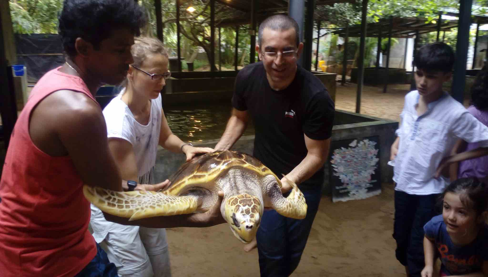

The Bentota Turtle Hatchery is a conservation project that was established in 1986 by the Sri Lanka Turtle Conservation Project. It is located on the west coast of Sri Lanka, in the town of Bentota. The hatchery is dedicated to the conservation of sea turtles, which are an endangered species due to habitat destruction, poaching, and accidental capture in fishing nets. The hatchery collects sea turtle eggs from nearby beaches and provides a safe place for them to hatch. Once the hatchlings emerge from their shells, they are kept in tanks until they are strong enough to be released into the ocean. Visitors to the Bentota Turtle Hatchery can observe the various stages of the hatching process, from the collection of the eggs to the release of the hatchlings into the ocean. The hatchery has a variety of tanks where visitors can observe adult sea turtles. The tanks are divided into sections based on the species of sea turtle and their age. Visitors can learn about the different species of sea turtles that are found in Sri Lanka, including the green turtle, hawksbill turtle, loggerhead turtle, olive ridley turtle, and leatherback turtle.
Bentota Turtle Hatchery: Educational Programs
The Bentota Turtle Hatchery offers a range of educational programs aimed at raising awareness about sea turtles and promoting conservation efforts. These programs are designed to engage visitors of all ages, including tourists, school groups, and local communities. By providing informative and interactive experiences, the hatchery aims to inspire a sense of environmental responsibility and encourage active participation in turtle conservation. One of the key educational programs at the Bentota Turtle Hatchery is guided tours. Knowledgeable staff members lead visitors through the hatchery, sharing valuable insights about the life cycle of sea turtles, their nesting behavior, and the threats they face. Visitors get to observe the nesting areas, see the hatcheries where the eggs are incubated, and even witness the release of hatchlings into the ocean. These tours offer a unique opportunity to learn firsthand about the challenges faced by sea turtles and the conservation efforts undertaken by the hatchery. In addition to guided tours, the Bentota Turtle Hatchery conducts educational workshops and presentations.

Bentota Turtle Hatchery: Tourist Activities
The Bentota Turtle Hatchery is a popular tourist attraction located on the southern coast of Sri Lanka. In addition to its conservation efforts, the hatchery offers a range of activities to visitors, making it an excellent destination for families, nature enthusiasts, and animal lovers alike. Tourists can observe the turtle hatchery's daily activities, including the process of collecting and caring for turtle eggs and the release of baby turtles into the ocean. Visitors can also interact with adult turtles and learn about their unique characteristics and conservation status.Guided tours are available to provide visitors with detailed information about the hatchery's conservation programs and turtle breeding process. The tours offer an educational experience that is suitable for all ages.
The hatchery also offers the opportunity to witness turtle feeding, where visitors can observe the turtles' feeding habits and learn about their dietary requirements. The hatchery's souvenir shop offers a range of turtle-themed gifts and memorabilia, including t-shirts, bags, and jewelry, all of which are ethically produced and support the hatchery's conservation efforts.